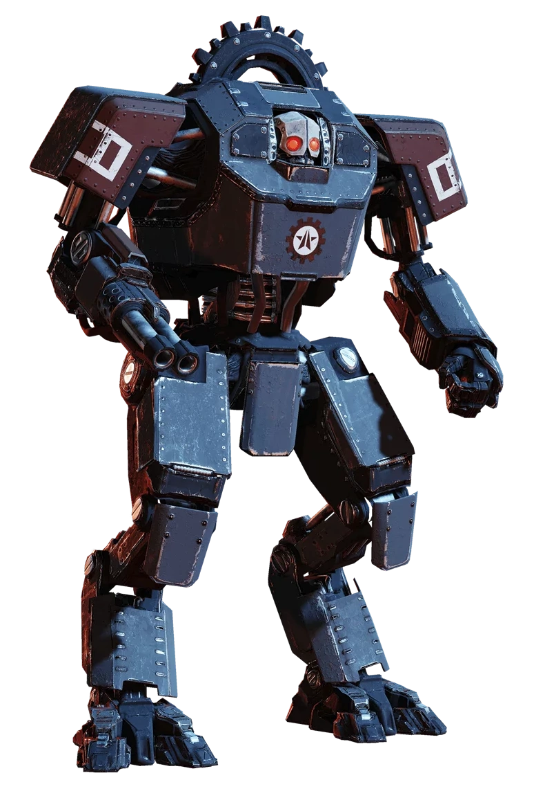
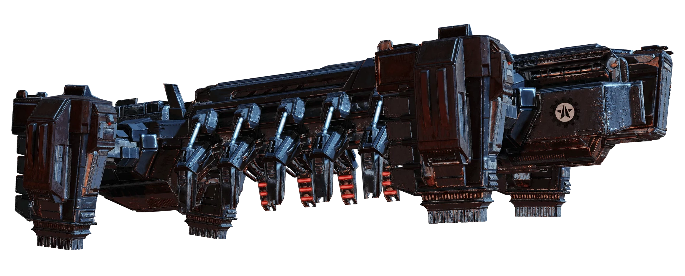
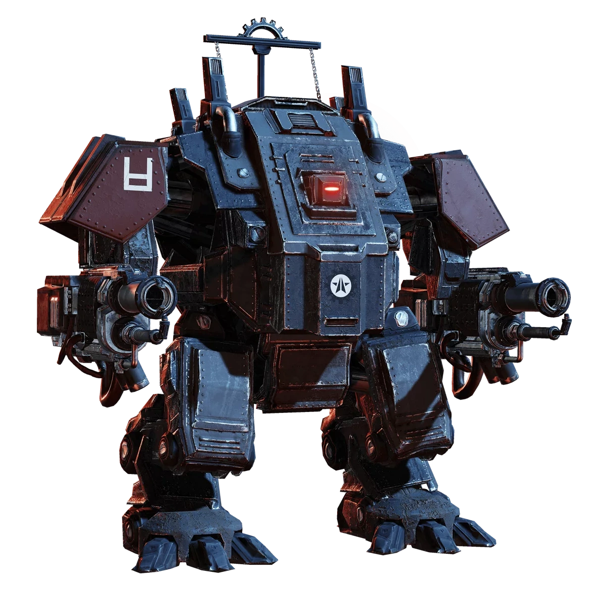
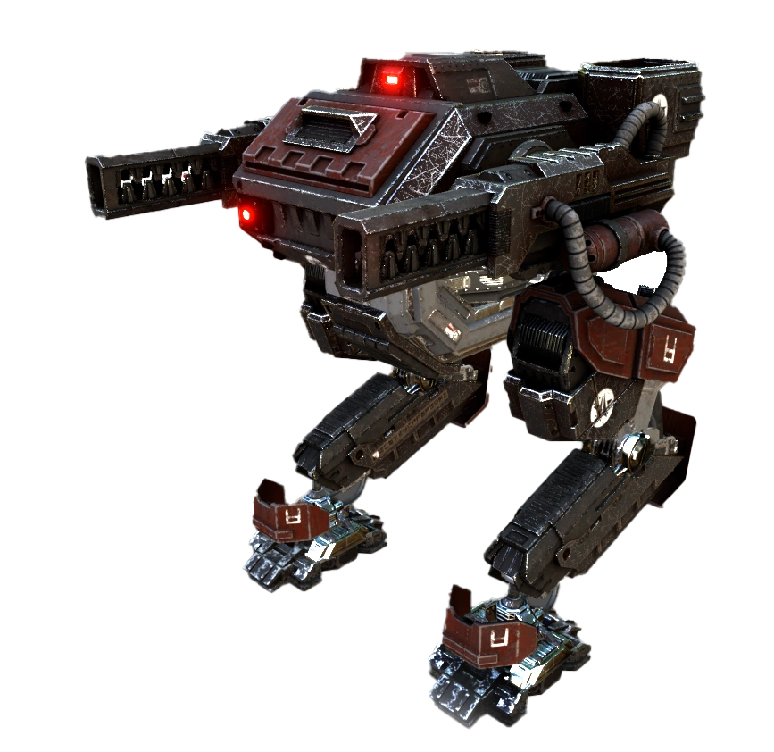

The Automatons. Machines of war, they savagly take Super Earth's control over planets and massacre its citizens. Destroy with extreme prejudice.
For Super Earth, and Democracy
Strategy:
The Automatons are largly ranged, so when facing them you want to take cover. The Automatons main gimick is heavy armour, with weak-spots that reward precision. That said, stratigems such as the Recoiless Rifle or EATs are supreme on this front. Bring any high penetration weapon and you will be fine.
Tough Enemies:
The Devestator:

The devestator has medium armour on most of its body, but has light armour on its head and abdomen, aim there.
The Dropship:

The Dropship, after a bot-drop is called, these ships will bring in enemy units, hit them with the Recoiless Rilfe or EATs in the boosters to take them down and potentially crush some enemies.
The Hulk:

The Hulk, a Very highly armoured enemy, only weakspots are the vents on the back and the visor, heavy armour piercing is required to kill from the vizor. optionally the Recoiless Rifle, EATs or Quasar Cannon can be used to 1 shot it in the chest.
The War-Strider

The War-Strider, a imosing machine, while it has weakspots, they are very hard to hit, hit them in the crotch with a Recoiless Rifle or EAT shot to take it down.
The Factory Strider

The Factory Strider, a formidable enemy, twin miniguns under its head (typically refered to as "teeth"), a powerful cannon on its back, and its namesake, a Devestator factory on its underside. While powerful, a little bit of team coordination can take this foe down. A Recoiless Rifle or EAT shot tothe cannon takes the cannon out, and the teeth are unarmoured, however, it is reccomended that you take out the cannon, and then use heavy ordinance on it, such as a 500kg bomb.